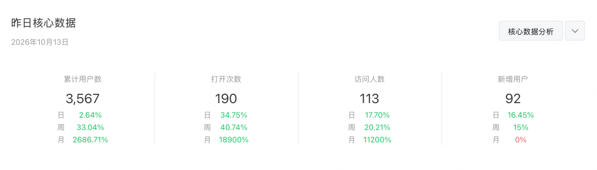
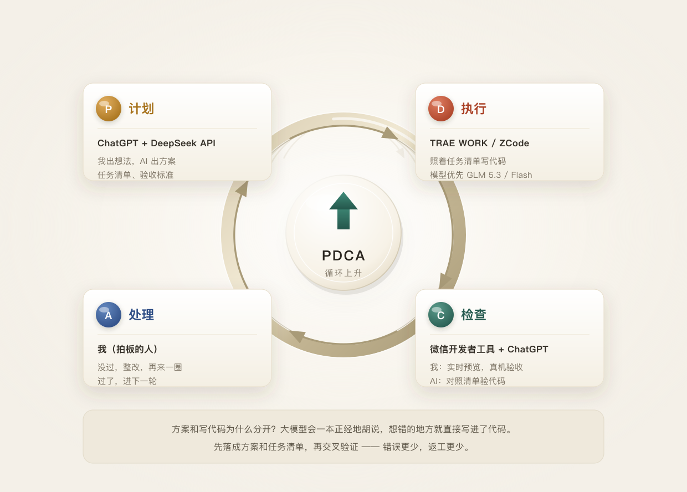
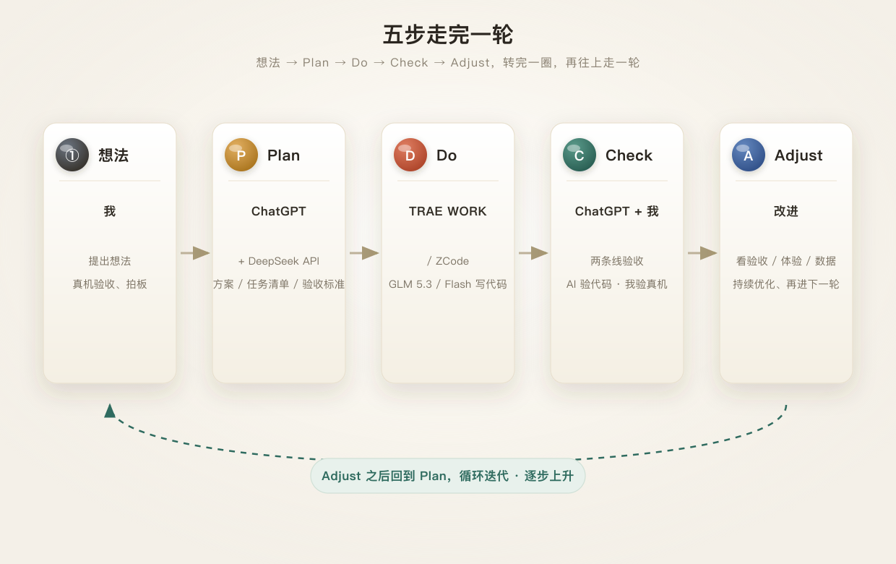
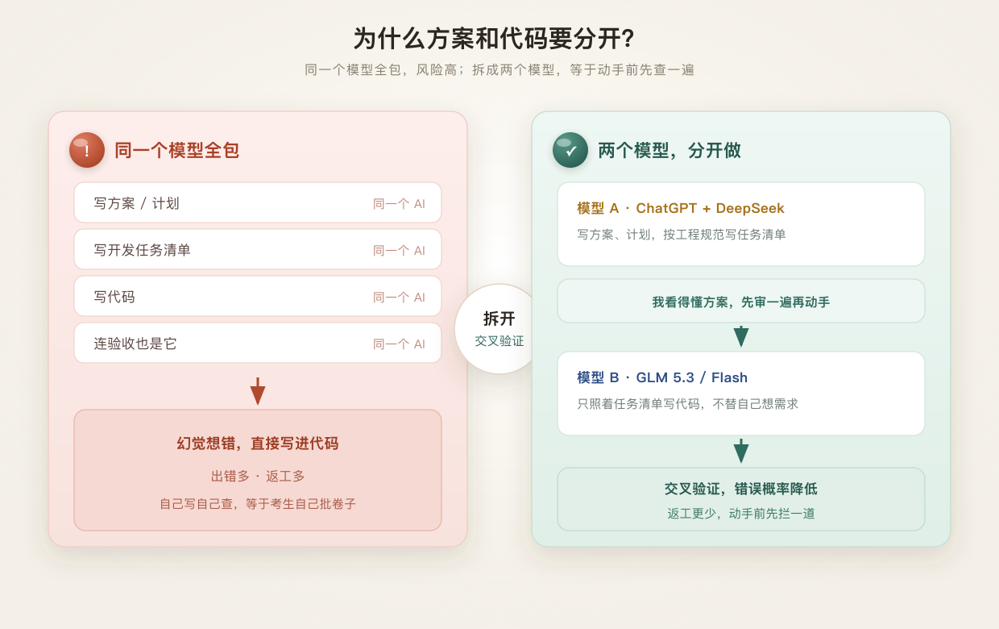
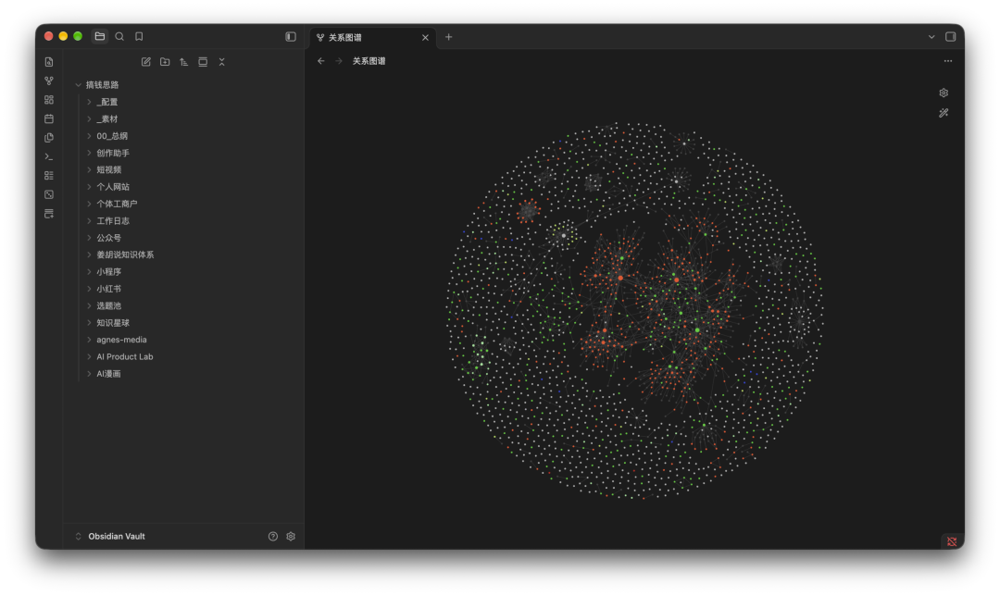
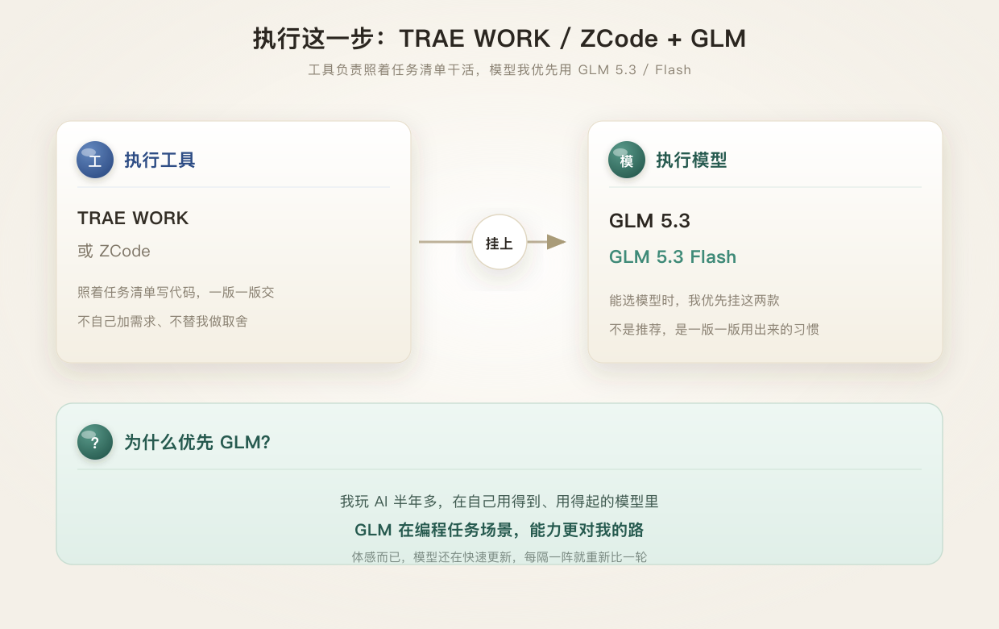
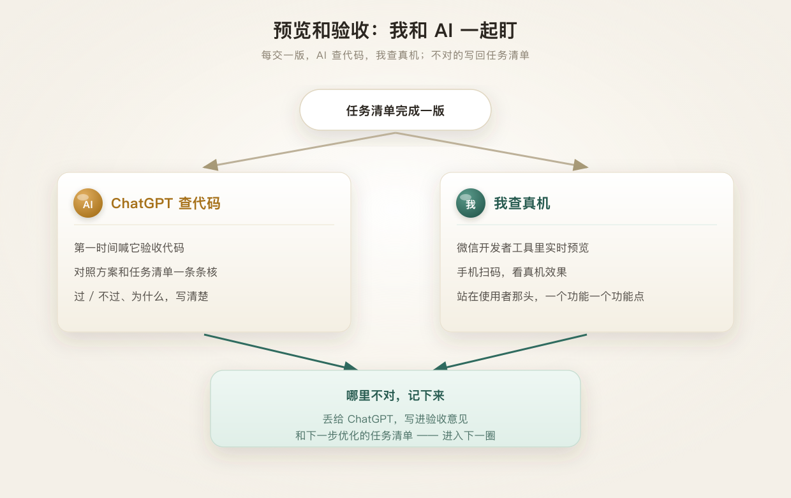
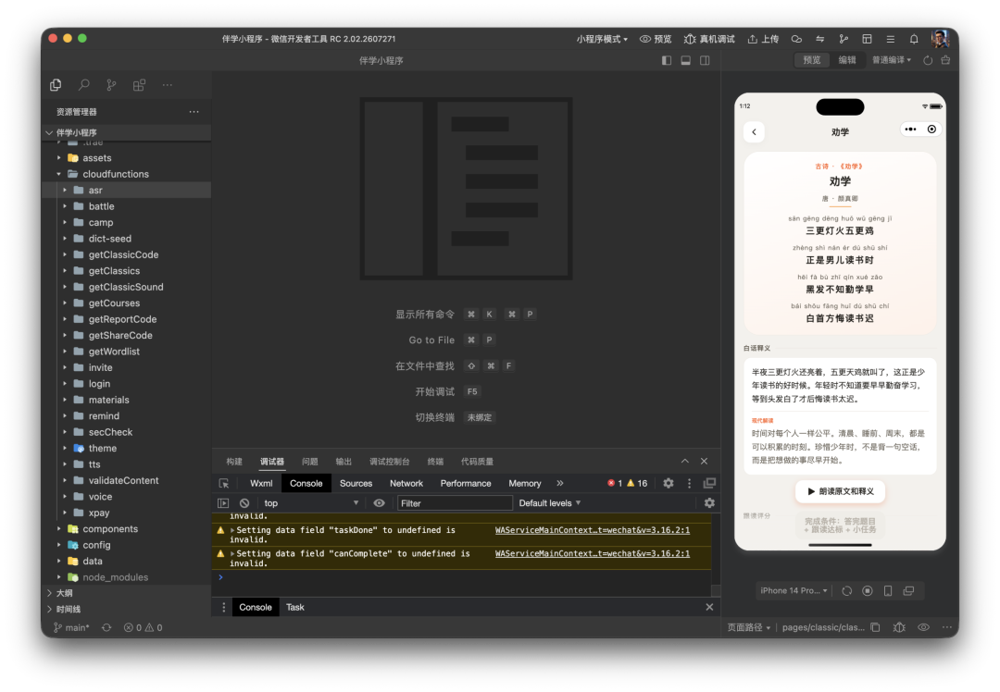

你好，我是平野先生。
作为一个从来没学过编程的职场中年人，是怎么在下班后用两个月时间上线一款小程序，并且做到了 3500+ 用户。

这是「星图记」小程序实战连载专栏的第三篇文章，这一篇就把我用 AI 开发小程序的 PDCA 工作流分享给你。

一、我的 PDCA 工作流
环节一：想法：我负责提出想法，和真机验收。
环节二 Plan：方案/计划——ChatGPT，我给它接的是 DeepSeek 的 API。它负责把想法变成方案、计划、开发任务清单，还有验收标准。
环节三 Do：执行。工具我用 TRAE WORK 或者 ZCode，照着任务清单写代码。
环节四 Check：验收。我和 ChatGPT。我负责微信开发者工具里实时预览和真机验收，ChatGPT 负责对照方案和任务清单验收代码。
环节五 Adjust：改进。根据 ChatGPT 验收代码和我验收真机使用的结果，以及线上数据反馈的情况，还有时不时冒出来的新想法，对小程序持续优化、升级。

二、为什么写方案和写代码要分开
因为大模型有幻觉。
说白了，它会一本正经地胡说。它不知道的地方，也敢往下写。
你要是用同一个大模型把写方案/计划、写任务清单、写代码、验收的活都干了，出错、返工的风险很高。
拆开就不一样。
DeepSeek 按照我的想法写方案、计划，按照小程序工程规范写任务清单，到了执行写代码的环节换另一个大模型，相当于在执行之前先做一次检查再动手。
再就是交叉验证：方案一个模型出，代码另一个模型写，两边互相盯着。错误概率降下来，返工就少。
还有个好处：我看得懂方案，但看不懂代码和开发逻辑，大模型看得懂。

这里插个话题：为什么不直接用完全免费的 DeepSeek 网页版写方案计划、任务清单？
网页版 DeepSeek 不能直接生成文档，方案计划、任务清单还要复制粘贴。
网页版 DeepSeek 没有验收代码的能力。
网页版 DeepSeek 没有项目记忆，只能记住同一个对话内的上下文，长期、跨对话内容容易丢失。
网页版 DeepSeek 不能连 Obsidian，我所有的项目文件，包括小程序的、做视频的、随手写的文章……杂七杂八的都在里面。
以上这些全都需要借助 agent + DeepSeek API 才能完成。

三、执行这一步，我用 TRAE WORK / ZCode
执行任务清单，我用 TRAE WORK 或者 ZCode。
这里面能选模型，我优先用 GLM——GLM 5.3、GLM 5.3 Flash。
大模型为什么选 GLM？
这是我玩 AI 半年多来自己的体感——在我能用得到、用得起的大模型中，GLM 在编程任务场景中的表现更好。

四、预览和验收我和 AI 一起盯
任务清单完成一版，第一时间喊 ChatGPT 验收代码。
我在微信开发者工具里马上看真机效果。
哪里不对记下来，丢给 ChatGPT，写进验收意见和下一步优化的任务清单。


总结一下 PDCA 工作流：
- 我出想法。
- Plan 计划：ChatGPT（用的 DeepSeek API）把我的想法写成方案/计划、任务清单。
- Do 执行：GLM 5.3 / GLM 5.3 Flash 按照任务清单写代码。
- Check 检查/验收：ChatGPT 验收代码，我验收真机效果。
- Adjust 改进：根据验收结果、真机体验、上线数据持续优化升级。
靠着这一套工作流，我在两个月里利用下班时间已经把小程序版本更新到了 1.9.6，很幸运，还受到不少像我一样的宝爸、宝妈们的喜欢。这么多人喜欢、在用，是我持续更新这个小程序的很大一部分动力来源。
下一篇分享：小程序内容从哪来。
一个语文内容为主的小程序，光课文和题库就够忙的，我是怎么没被拖死的。
如果有哪段正好也是你在经历的，欢迎评论区一起聊。
我是平野先生，关注我，分享真实的使用体验和踩坑记录。